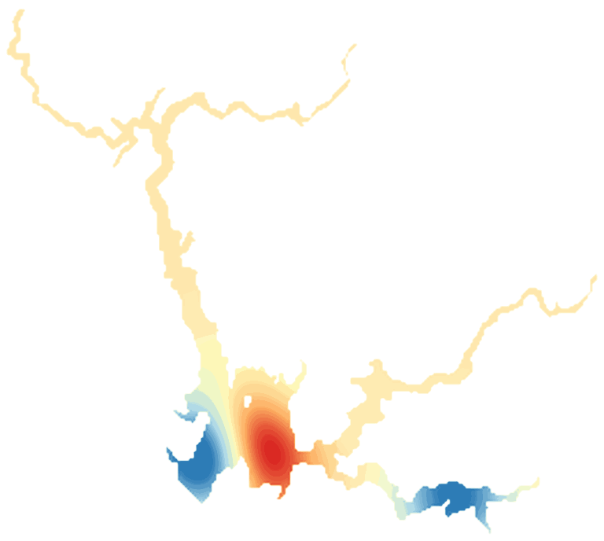

LakeScope › CA
Lake Oroville today
Updated 2026-11-21 - Atlas Labs
Clear water, 53°F water, level rising, 7 ft above normal, calm this morning.
Water level
732.60 ft
California Dept. of Water Resources - 2026-11-19
7-day trend: rising (+1.13 ft). Compared with normal for this date: +7.0 ft (same weeks, 2016-2025).
Water clarity and algae
Clear water Last clear view: about a week ago. 1 cloudy pass since.
Surface temperature
53°F
seen from space on 2026-11-18

Ice
Open - 0% ice cover
Estimate from weather and satellite, not a measurement. Check the ice yourself before going on it.
Weather, next 3 days
| Day | Sky | High / low | Wind | Rain |
|---|---|---|---|---|
| Saturday | Mostly Cloudy then Chance Light Rain | 48 / 43°F | 5 mph SE | 41% |
| Sunday | Chance Light Rain | 47 / 41°F | 2 mph SSE | 34% |
| Monday | Partly Sunny | 51 / 44°F | 3 mph SSE | 3% |
Sunrise 06:57 - sunset 16:45 - Waxing gibbous. National Weather Service.
Get the LakeScope app: alerts and the 3-D view of Lake Oroville